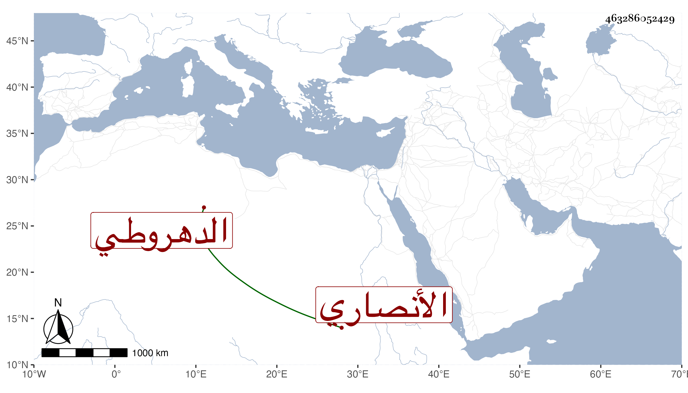

0902Sakhawi.DawLamic.ITO20230111-ara1.EIS1600.463286052429
Biography ID: 463286052429
235
أحمد بن محمد بن أحمد بن علي بن عيسى شهاب الدين بن التاج الأنصاري الدهروطي الأصل القاهري لشافعي أحد جيران المنكوتمرية كأبيه الآتي وجده الماضي ويعرف بالأنصاري . ممن حفظ القرآن وغيره وعرض على شيخنا وجماعة وسمع عليه ثم تكسب بالشهادة وربما جلس عند زوج أخته الفخر الأسيوطي وبأخرة كان بمجلس ابن فيشة مع ابن الرومي بالحسينية ويقال أنه لم يتحرر وقد خطب ببعض الأماكن وباسمه جهات صارت إليه من أبيه . مات بعد أن انقطع مدة بالفالج في ليلة سابع عشر ربيع الثاني سنة خمس وتسعين وصلى عليه من الغد بعد صلاة الجمعة بجامع الحاكم ثم دفن بزاوية سمر محل سكنه تجاه المنكوتمرية .
